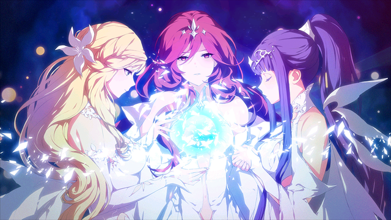

GENESIS
In the beginning, there was a Creator. The supreme being gave life to Gods who would be responsible for creating worlds and Gods in charge of destroying the decrepit ones.
These are known as deities and demons respectively.Instead of living with the deities in the physical world, Elyos was created to house the ferocious demons. When necessary,
the demons would traverse through the Dimensional Portals to cause destruction.
he gods descended on the continent of Archimedia located in the primitive world of Aernas. Kakaodeityillust Ernasis the goddess of war and bravery, Lisnar the goddess of mercy and spirit, and Amenias the goddess of wisdom and harmony led to the creation of the world. The world was named after Ernasis, the representative god who had first arrived. It was inhabited by the humans, elves, and dwarves and the goddess selected those with bravery and creativity to help them continue the creation of the world. The gods quickly civilized primitive humans so that they could be spread throughout the world and deliver their will. Ernasis gifted them with bravery, Lisnar gifted them with holiness and Amenias gifted them with wisdom. With these gifts in hand, the humans bravely expanded their territory, learned to use magic, and used the wisdom to develop machinery. Combining their powers, the gods and humans created a civilization at the center of Archimedia and called it Kounat. Many of the gods fell in love with the humans and the children conceived were born with distinguishable abilities unlike those that were born of just human parents. As the numbers of these children increased, they became known as the Celestials and with the gods, they accelerated the development of magic in Kounat. With Kounat at the core, the magic civilization spread to the whole region of Archimedia.
The dwarves and the elves that inhabited the northern and southern regions of Kounat became influenced by the Celestials and through the exchange of information, accepted the advanced civilization. From the exchange, the elves were able to use more powerful magic and the dwarves obtained information to advance their mechanical engineering. Out of sight of other goddesses, the Malevolent Horde grew and threatened to destroy everything good in Aernas. On a trip to the East, the goddess of life and purity Agnesia found innocents suffering and came face to face with the terrible magical creature made of pure evil. Agnesia used all her powers to seal the creature within her own body and save the world but the consequence of using that forbidden magic drained almost all of her divine powers, leading her to the brink of death. Should Agnesia die, the evil in her body would be released. On her last legs and spending the last spark of her divine power, Agnesia cast a spell of eternal resurrection. Through the ages, Agnesia would be doomed to continue being reborn to keep the seal intact.